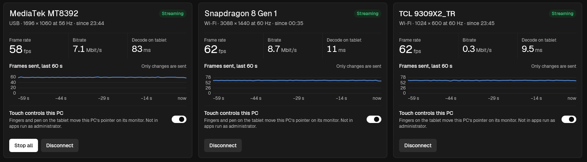
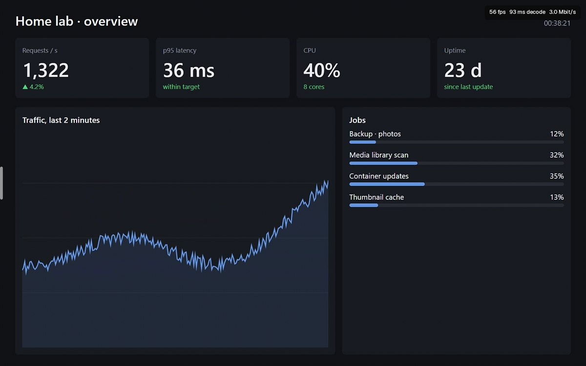
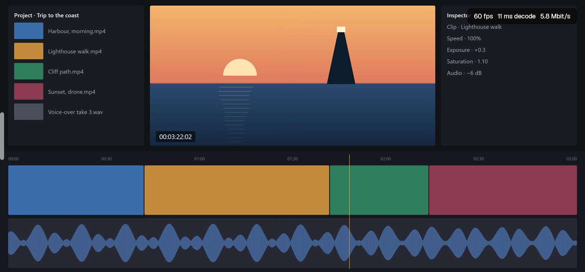
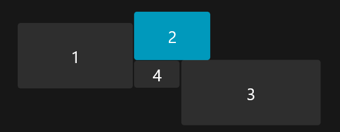

Spare tablets, extra monitors.
ScreenFleet is a free app that turns the Android tablets and phones in your drawer into real extra monitors for Windows, over USB or Wi-Fi. Several at once, with touch.

Every screen is its own monitor.
Each device gets its own display in Windows at its native resolution. Place it where it sits on your desk, then drag windows onto it. This is what two of them showed in that session.

MediaTek MT8392 tablet
56 fps · Android 4.4 · USB · 1696 × 1060

Snapdragon 8 Gen 1 phone
60 fps · Android 16 · Wi-Fi · 3088 × 1440

Arranged like the desk
Windows’ own Display settings with the main monitor and three ScreenFleet screens.
See it join your desktop, the way Windows lays it out.
Fingers and pen move this PC’s pointer on its monitor.
Tune it while it runs.
Speed or sharpness
Balanced sends up to 60 fps at 8 Mbit/s. Changes apply right away.
A still screen costs nothing
Frames go out only when the monitor changes. Video and scrolling reach 60 fps; a page you’re reading sends nothing.
Touch and pen
Fingers and a stylus control the PC on that monitor, with hover, pressure and the eraser. Turn it off for a cracked screen.
USB or Wi-Fi, per device
USB works on every version and is the only link on Android 4.4. From Android 5, Wi-Fi needs no cable and no extra software.
How it works
Install once on each side. After the first pairing, it connects by itself.
First, install the app on the PC and the tablet.
Then it shows up on your Wi-Fi.
Type the code it shows, once.
From then on it connects by itself.
Measured on real chips.
All from one session on one PC, so you can compare with what you have.
MediaTek MT8392Android 4.4 · USB · 1696 × 1060
Snapdragon 8 Gen 1Android 16 · Wi-Fi · 3088 × 1440
TCL_CHIPAndroid 12 · Wi-Fi · 1024 × 600
Nothing leaves your network.
No account, no cloud
There is no ScreenFleet server. The picture travels over your cable or your own Wi-Fi.
Encrypted over Wi-Fi
Devices pair once with a 6-digit code (ECDH P-256); every session is encrypted with AES-256-GCM, and the PC streams only to paired devices.
A driver signed for your PC only
Setup signs the display driver with a certificate made on your PC and deletes the private key at once, so nobody can sign anything else with it. Uninstalling removes both.
A small app that steps aside.
Until the PC connects, it shows what it’s waiting for. Once streaming, it’s your desktop edge to edge; the menu hides behind a handle on the left.
- Native or smaller resolution, 30 or 60 fps
- Landscape or portrait
- Optional stats overlay
Questions, answered
Get ScreenFleet 1.0.0
The setup on your PC, the app on every tablet or phone. Windows 10 2004+ or 11, 64-bit; Android 4.4 or newer.
If SmartScreen warns
The setup isn’t signed with a paid certificate yet: choose More info, then Run anyway. Uninstall from Settings › Apps removes the driver too.
For USB
Turn on USB debugging on the device and install platform-tools (adb) on the PC. Wi-Fi needs nothing extra.
Checksums (SHA-256)
Setup 9e1867d8842e083c2624f6dc097936ddd4d6ed220c8dbe0488a3ae1ef85e5ea2
APK a3573fdb4aa1ed6228f4271b2f49d0c91f9052063889d7a1ad01158d64e7a2fb